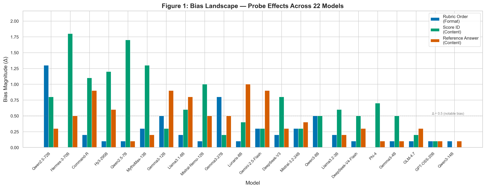
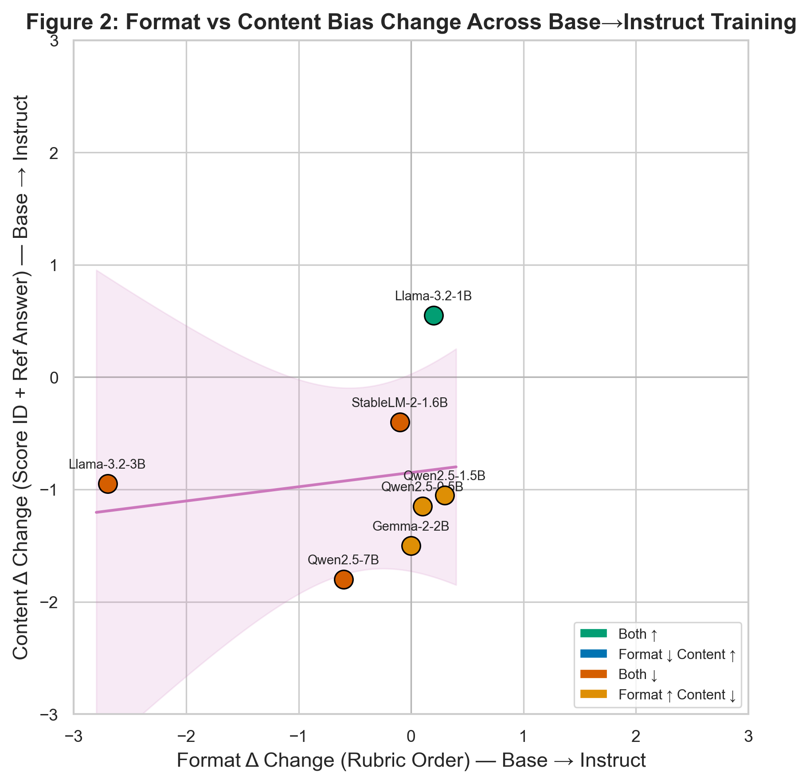
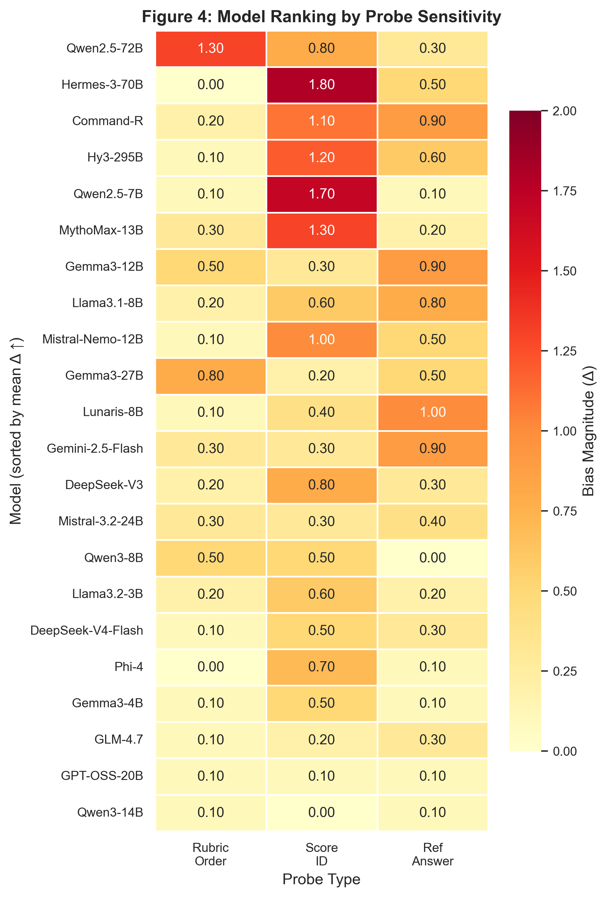
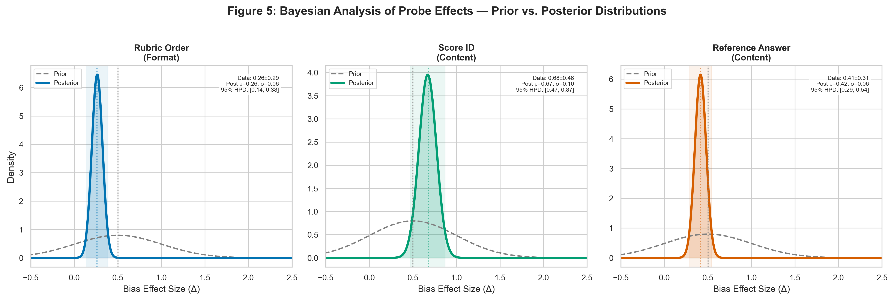

Figure Gallery

Fig 1. Bias landscape across 22 instruct-tuned models

Fig 2. Format Δ change vs content Δ change (9 families)

Fig 3. Scale-dependent differential effect

Fig 4. Model ranking heatmap by bias magnitude

Fig 5. Bayesian posterior distributions

Fig 7. Base vs instruct paired comparison